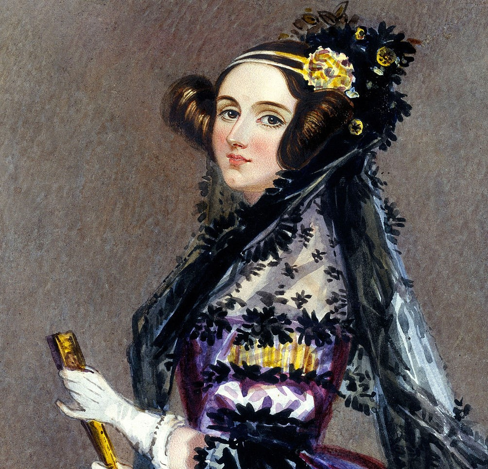
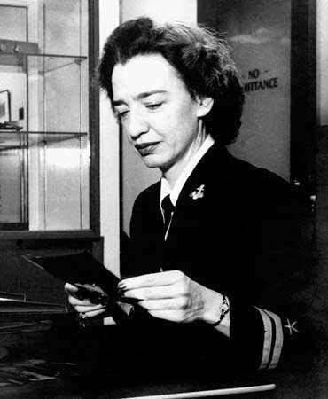

Ada Lovelace, egentligen Augusta Ada King, grevinna av Lovelace, född Byron 10 december 1815 i London, död där 27 november 1852, var en engelsk matematiker och skribent. Hon var den första personen som skapade en algoritm avsedd för att användas i en dator oktober månad 1842. Hon är då den första programmeraren. Vilket jag inte förväntade mig, jag förväntade mig egentligen att en man hade skapat den första koden. Anledningen varför jag trodde detta är på grund av hur det var förr i tiden. Förr i tiden var det mansdominerat och kvinnor hade inte många rättigheter till skillnad till män. Själv trodde jag också att den första koden var skapad vid 1900-talet, inte tidigare.
Grace Hopper (född Murray), född den 9 december 1906 i New York, död den 1 januari 1992 i Arlington, Virginia, Grace var en amerikansk dator-pionjär och sjöofficer (flottiljamiral). Hon var bland annat med och utvecklade Harvard Mark I och skapade också den första kompilatorn. Kompilatorn är finns för att översätta kod så att datorn förstår vad koden försöker berätta. Detta är kritiskt eftersom JAVA inte var programmerat att kunna översätta koden så datorn förstår.
Hedy Lamarr, egentligen nämnd Hedwig Eva Maria Kiesler, född 9 november 1914 i Wien, Österrike, död 19 januari 2000 i Orlando, Florida, USA, var en österrikisk-amerikansk skådespelare och även en uppfinnare. Hon blev nämnd världens snyggaste tjej från år 1940 till 950. Hon har gjort mängder av filmer, den största av dem var Sunson samt Delila som blev utsläppta år 1949. Det hon lyckades uppfinna var secret Communication System. Hedy och George Antheil var personerna som assisterade henne med uppfinningen. På grund av denna uppfinning har vi nu idag wi-fi, GPS och bluetooth.
| Andel kvinnor | Andel män | Trend för kvinnor | |
|---|---|---|---|
| Studerande på univer/högskola | 60% | 40% | ingen förändring |
| Studerande på Tekn. högskola | 34% | 66% | stigande |
| Anlagda doktorsexamina | 50% | 50% | stigande |
| Avlagda civ. ing. examina | 27% | 73% | något stigande |